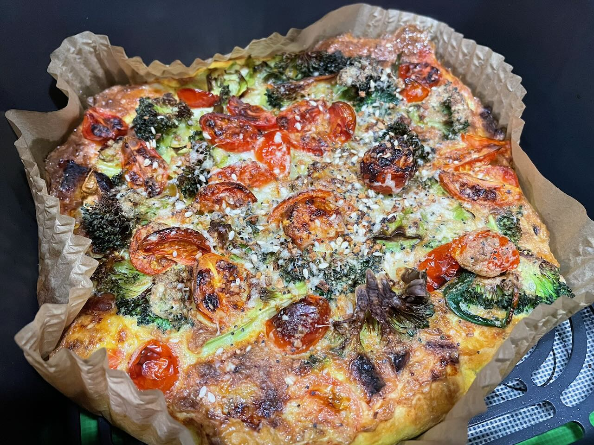

Air Fryer Frittata
Air Fryer · Low Carb · High Protein

Ingredients
| Item | Amount |
|---|---|
| Eggs | 6 large |
| Broccoli | 1 cup chopped, blanched 2 min, dried |
| Chicken sausage | diced |
| Cherry tomatoes | 1 dozen, sliced |
| Shaved Asiago cheese | 1/4 cup shredded |
| Everything bagel seasoning | 1 tbsp |
Instructions
- Line air fryer pan with a parchment paper square.
- Blend eggs with everything bagel seasoning.
- Place broccoli, chicken sausage, and most of the cheese in the pan.
- Pour egg mixture over the add-ins. Top with remaining cheese.
- Air fry at 350°F for 20 minutes.
- Lift tray and place on a rack.
- Rest 10 minutes before slicing.